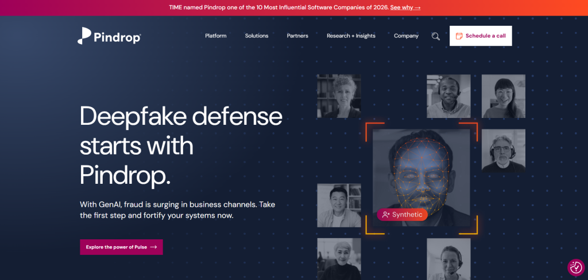
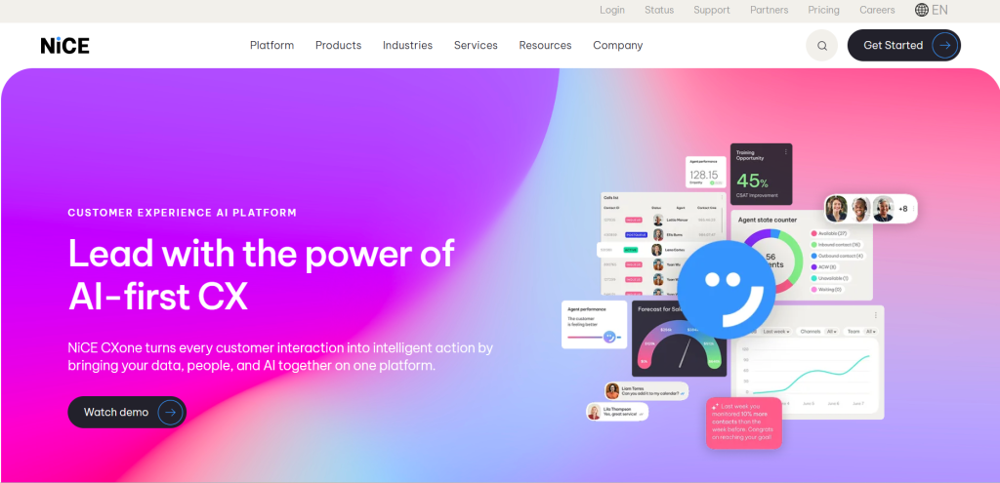
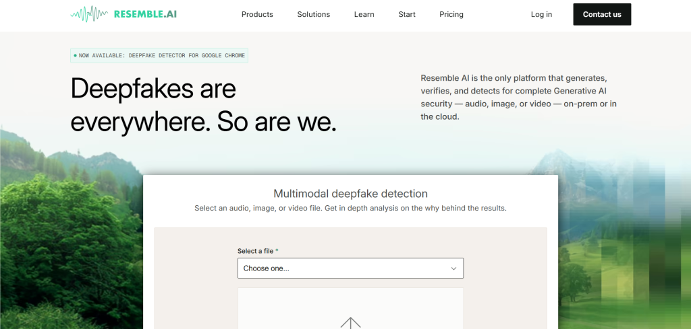

In an era where a single phone call can drain millions from corporate accounts, voice-based fraud has evolved from nuisance to nightmare. Fraudsters now wield AI-generated voices that sound indistinguishable from your CEO, trusted colleague, or even a family member—executing sophisticated vishing attacks, account takeovers, and deepfake scams in real time.
Businesses in banking, insurance, telecom, and e-commerce lose billions annually to these threats, with AI-powered voice cloning attacks surging dramatically in recent years. The good news? Voice AI tools are fighting back with cutting-edge biometrics, deepfake detection, and behavioral analytics that spot fakes in seconds. These intelligent systems don’t just listen—they analyze thousands of audio factors, caller patterns, and contextual signals to protect your operations and customers.
This guide explores the top voice AI platforms transforming fraud detection workflows in 2026. Whether you run a high-volume call center or a growing fintech operation, these tools deliver real-time protection with minimal friction.
The Rising Threat of Voice-Based Fraud
Voice fraud isn’t new, but AI has supercharged it. Criminals can clone a voice with just three seconds of audio and launch convincing impersonations across IVR systems, live agent calls, or virtual meetings. Deepfakes now combine cloned voices with synthetic video, making traditional verification methods—like security questions or OTPs—shockingly ineffective.
Recent industry reports show synthetic voice attacks against insurance companies alone jumped 475% year-over-year. Global losses from AI scams continue to climb, with contact centers and financial institutions bearing the brunt. Voice AI steps in as the frontline defense by enabling passive authentication during natural conversation, flagging anomalies instantly, and blocking threats before money moves.
How Voice AI Powers Modern Fraud Detection Workflows?
Voice AI integrates seamlessly into existing call center, IVR, and customer service platforms. It works across three core layers:
- Voice Biometrics: Creates unique “voiceprints” from over 1,000 vocal traits like pitch, cadence, and breathing patterns for passive, frictionless authentication.
- Deepfake and Synthetic Detection: Analyzes acoustic artifacts, spectral inconsistencies, and generation signatures to identify AI-cloned audio in under two seconds.
- Behavioral and Contextual Analytics: Monitors tone shifts, hesitation, scripting patterns, device metadata, and call routing anomalies for real-time risk scoring.
These tools trigger automated alerts, escalate high-risk calls, or route suspicious interactions for human review—all while maintaining smooth customer experiences. Many now support agentic AI workflows, extending protection to virtual agents and omnichannel interactions.
Leading Voice AI Tools Transforming Fraud Prevention
Pindrop: The Enterprise Gold Standard for Voice Security

Pindrop stands out as the go-to platform for large-scale fraud detection in contact centers and financial institutions. Its Pulse technology detects synthetic voices with 99.2% accuracy in just seconds, analyzing over 1,300 audio factors plus device and network intelligence.
Key features include passive voice biometrics (no need to repeat phrases), real-time risk scoring, and IVR fraud containment. Pindrop integrates natively with platforms like NICE CXone, Genesys, Five9, and Amazon Connect. Recent expansions include partnerships with Zoom for meeting security and deeper NICE CXone embedding for agentic AI flows.
Businesses report up to 80% fraud reduction with dramatically lower false positives. As Pindrop shared on X recently, attackers are increasingly blending synthetic voice and video—making multifactor analysis essential. Visit Pindrop to explore their solutions.
NICE CXone with Integrated Voice Biometrics

NICE CXone powers enterprise contact centers with built-in AI that now leverages Pindrop’s detection engine for native, real-time voice authentication and deepfake defense. The platform analyzes vocal characteristics alongside behavioral patterns to create dynamic fraud profiles.
It excels at continuous learning across billions of interactions, blacklisting repeat fraudsters, and reducing average handle time while cutting losses. Perfect for regulated industries like banking and insurance, NICE handles omnichannel workflows and supports AI agents without compromising security. Check out NICE CXone for details on their fraud insights.
Resemble AI: Developer-Friendly Deepfake Detection at Scale

For teams needing flexible, API-driven protection, Resemble AI delivers multimodal deepfake detection across audio, video, and images. Its Detect tool identifies synthetic speech with exceptional accuracy, offering real-time analysis, watermarking for authenticity, and a free Chrome extension for quick testing.
Resemble shines in high-velocity environments like e-commerce support or recruitment calls. It provides detailed authenticity scoring and works against the latest generation methods. Developers love the on-prem or cloud options and zero-day coverage. Explore more at Resemble AI.
Modulate Velma Deepfake Detect: Affordable Real-Time Power
Modulate’s Velma platform brings enterprise-grade deepfake detection to a broader audience with streaming analysis at just $0.25 per hour. Ranked #1 on key benchmarks, it monitors full calls in real time for synthetic voices, social engineering tactics, and intent anomalies—ideal for mid-market teams scaling quickly.
It integrates easily into existing telephony stacks and delivers low error rates while maintaining natural conversation flow. Modulate helps organizations move beyond reactive defenses to proactive threat blocking.
Comparing the Top Voice AI Tools
| Tool | Key Features | Detection Accuracy | Best For | Key Integrations | Pricing Model |
|---|---|---|---|---|---|
| Pindrop | 1,300+ audio factors, passive biometrics, deepfake Pulse | 99.2% deepfake | Call centers, banking, enterprise | NICE CXone, Genesys, Five9, Zoom | Enterprise (custom) |
| NICE CXone | Voice biometrics (1,000+ traits), behavioral analytics, Pindrop integration | 95%+ biometric | Large financial institutions | Native CCaaS, CRM, AI agents | Subscription (per agent) |
| Resemble AI | Multimodal deepfake detect, watermarking, API-first | >98% across modalities | Developers, e-commerce, SMBs | APIs, Chrome extension | Usage-based + free tier |
| Modulate Velma | Real-time streaming detection, intent analysis | Top benchmark (low EER) | Mid-market, scalable operations | Telephony stacks, custom APIs | $0.25/hour streaming |
This comparison highlights how each tool fits different workflow scales and budgets while delivering proven fraud prevention results.
Implementing Voice AI in Your Fraud Detection Strategy
Start by auditing your current call flows for high-risk touchpoints like authentication, payments, or account changes. Choose tools with pre-built integrations to minimize disruption. Pilot in one channel (e.g., inbound IVR) before full rollout, and train teams on interpreting risk scores and escalation protocols.
Privacy matters—opt for platforms with strong compliance (GDPR, SOC 2) and minimal data retention. Monitor false positive rates closely and combine voice AI with device intelligence and knowledge-based checks for layered defense.
The Future Outlook for Voice AI Fraud Prevention
As agentic AI agents handle more customer interactions, voice security will become even more critical. Expect tighter multimodal fusion (voice + video + location), predictive threat intelligence, and invisible watermarking standards. The voice biometrics market is projected to grow rapidly as deepfake threats evolve, making early adopters of these tools far more resilient.
Why Voice AI Is Now Essential for Fraud Workflows?
Voice AI tools like Pindrop, NICE CXone, Resemble AI, and Modulate aren’t just nice-to-have—they’re becoming table stakes for protecting revenue, reputation, and trust. By embedding intelligent detection directly into your communication channels, you stop fraud before it starts while delivering faster, safer customer experiences.
Ready to strengthen your defenses? Evaluate these platforms against your specific call volume, industry regulations, and integration needs. The criminals are using AI—make sure your organization is too.